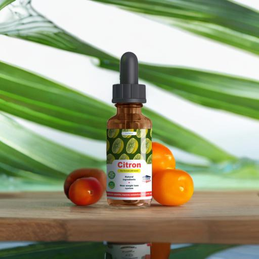
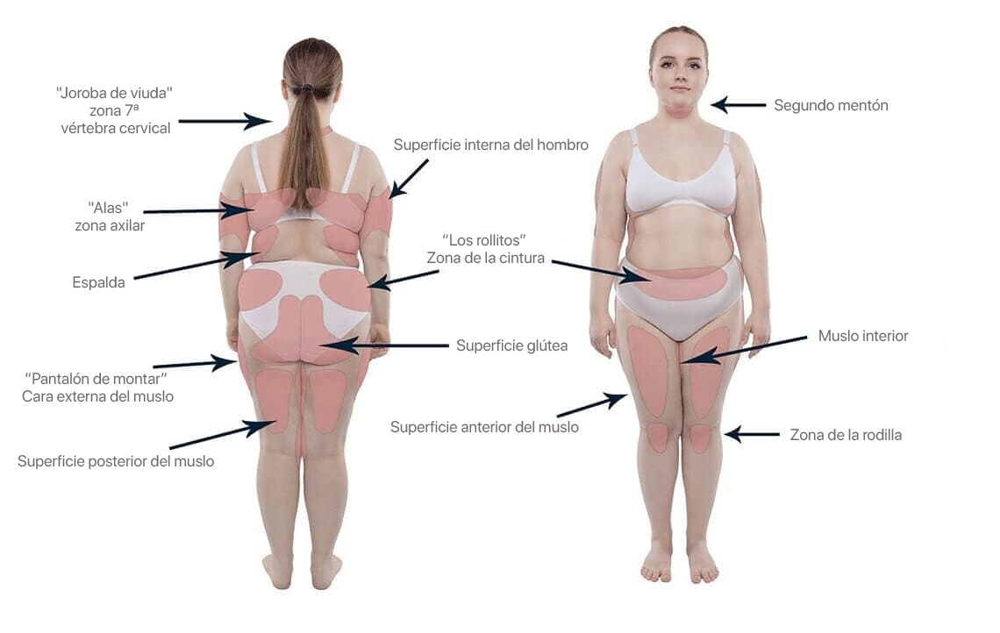
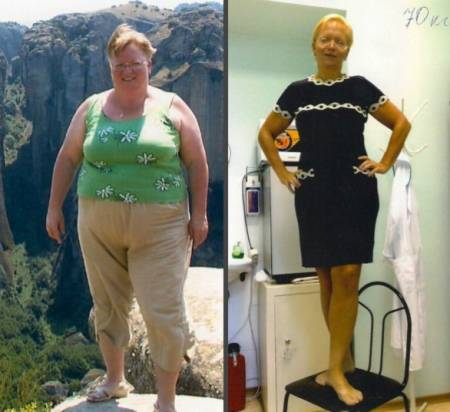

¡EMPEZAMOS EL AÑO NUEVO CON UN CUERPO NUEVO!
¡Cómo perdí peso PERFECTAMENTE de 100 a 55 kg! Este Año Nuevo ME PUEDO PERMITIR pasteles, ensaladillas y champán - ¡Simplemente sé que NO ENGORDARÉ MÁS!
¡Hola a todos, mi nombre es Ana, tengo 28 años y viví un VERDADERO MILAGRO A VÍSPERAS DEL AÑO NUEVO! ¡El Año Nuevo pasado me lo celebré pesando más de 100 kg, y este Año Nuevo lo celebraré delgada pesando sólo 55 kg!
En verano pesaba cerca de 100 kg, y en diciembre mi peso ya era de 55. ¿Cómo es posible? - preguntarán Vds. ¿Una dieta estricta? ¿Deporte todos los días? ¿Píldoras mágicas tailandesas?
No! Nada de eso me ayudó a perder peso y sólo tuve problemas de salud.
Pero voy a empezar a contarlo poco a poco.
Engordé durante el embarazo. Cuando vi mis fotos de Nochevieja, me quedé de piedra: ¡NO ME SENTÍ TAN ENORME POR DENTRO!
Sí, sabía que había engordado, pero cuando me vi de perfil, se me saltaron las lágrimas...
Mientras todos se divertían, yo revisaba mis fotos y lloraba, encerrada en el baño. No podía ni quería aceptarme como una cerda gorda y fea. Pero en lugar de dejar de comer, aquella Nochevieja comí todo lo que veía en la mesa, ¡para aliviar el dolor y odiándome a mí misma por ser débil!
Por la mañana, decidí adelgazar. Pero no se me dio muy bien, aunque hice todo lo que pude: no comía después de las 6, renuncié a los dulces y la harina, hice todo el ejercicio que pude (porque tenía un niño pequeño). Quizá las hormonas estaban muy activas, quizá estaba haciendo algo mal.
Con un esfuerzo increíble conseguí perder hasta 4 kg para el verano. Por supuesto, no era en absoluto lo que esperaba.
Parecía mucho mayor de lo que era, me costaba andar, era difícil encontrar ropa, así que llevaba lo que me cabía.
Miraba con envidia a las madres delgadas y esbeltas en pantalones cortos. En su compañía parecía diez años mayor, aunque todas teníamos más o menos la misma edad.
Decidí volver a la dieta estricta. Era pleno verano. Comía sobre todo fruta y verdura, pero el peso se estancaba siempre. La dieta me agotaba mental y físicamente.
Ya no tenía energía para las tareas domésticas, para pasear con el bebé, para mi marido. Estaba siempre enfadada, irritada. Pero me negaba siempre a comer, ¡y no hacía más que DAÑAR MI SALUD!
Bebía litros de café para animarme y tener energía. Una vez nos invitaron a un picnic y no pude resistir y comí un montón de kebab y salsa picante, y luego acabé en el hospital con pancreatitis.
En el hospital me curaron y me prohibieron de forma estricta las dietas. Recuperé todos los kilos que tanto me había costado perder y volví a casa pesando más de 100 kg, como siempre.
Entonces comprendí que tenía que actuar con prudencia. De lo contrario, dañaría mi salud y moriría sin ver crecer a mi bebé.
Empecé a estudiar la información, a leer los estudios científicos, artículos en páginas web médicas. Al consultar un montón de información, hice una lista de alimentos que ayudan a quemar grasa, reducir el apetito y restablecer el metabolismo (que dañé mucho con mis dietas sin sentido).
Resulta que los quema grasas más potentes son algunas frutas y verduras exóticas. Me frustré porque no son fáciles de encontrar en nuestras tiendas, e incluso si las encuentro, serán muy caras y no podré comerlas todos los días.
¡PERO! ¡HE ENCONTRADO ALGO MEJOR!
Mi búsqueda me llevó a la página web de un famoso nutricionista, donde el mismo habló de «Citron».
Al ver en qué consiste Citron, ¡me quedé alucinada! Contenía los mismos quemadores de grasa de mi lista:
- kumquat,
- alcachofa,
- espinacas,
- hinojo y otras plantas quema grasas.
Sin pensármelo dos veces, pedí el conjunto. Tuve suerte, hubo una promoción y conseguí pedir Citron con un descuento importante y lo tomé según las instrucciones: 30 gotas con un vaso de agua o zumo y lo bebí por la mañana y por la noche.
Entonces empezaron los milagros.
- No estaba a dieta, pero prácticamente no quería comer (este remedio frena el apetito), así que comía poco, pero tampoco pasaba hambre. Me permitía todo lo que quería, pero saciaba mi hambre muy rápido.
- No hice ejercicio, pero mi piel no se ablandó durante la pérdida de peso, sino al contrario, se volvió más firme. Ni una sola estría (excepto las que me salieron durante el embarazo). No se me ablandó nada.
- Me sentí llena de vida y energía! No tenía sueño ni fatiga como cuando estaba a dieta.
«Citron» es un concentrado de frutas rico en vitaminas. Mi salud solo mejoró, he llenado mi cuerpo con sustancias beneficiosas. Mi piel, mi pelo tuvieron mejor aspecto que antes.
¡Pero lo más importante! Empecé a perder
¡10-12kg al mes sin ningún esfuerzo!
Mi peso se reducía de forma visible, mi grasa desaparecía tan rápido que ni siquiera me compraba ropa nueva - simplemente no tenía sentido, a un par de semanas ya me quedaba demasiado grande.
Cada vez en la báscula no me lo podía creer al ver mi peso. Incluso después de las vacaciones, los kebabs y la cerveza perdí peso.
Sin esfuerzo, con buen humor, facilidad y actitud positiva perdí más de 40 kg. Recibí Citron en septiembre y para el año nuevo peso 55 kg y estoy encargando una sesión de fotos para por fin salir guapa, delgada y ¡la más feliz del mundo! Mi marido me mira de otra forma. Y mi hijo siempre estará orgulloso de su madre esbelta, joven y guapa.
¡Lo he conseguido! ¡He perdido el peso y soy muy feliz! ¡«CITRON» es un verdadero MILAGRO de Navidad!
¡Mi sueño se ha hecho realidad! Otra vez me veo delgada, guapa y enamorada de mí misma, y ahora sólo sonrío cuando veo mis nuevas fotos.
¡Queridas chicas! ¡No se torturen con dietas y deportes! ¡Hoy en día hay una forma de perder el peso RÁPIDÁ, SEGURA y PERFECTA!
¡Y lo más importante, el peso perdido no se recuperará, porque Citron recupera el metabolismo y ayuda al cuerpo a funcionar correctamente!
No se desespere en caso de no haber podido perder peso. ¡No se rinda! Pude recuperar mi belleza, ¡y usted lo hará muy bien!
¡Cree en el milagro y en «Citron»!
Ana Martín, Ciudad Real
Nota del editor: Nos reunimos con el nutricionista jefe del país, el profesor Fernando Sánchez, M.D. y hablamos sobre el problema del sobrepeso.
Doctor en Medicina, profesor, nutricionista endocrinólogo en ejercicio, jefe del Instituto de Nutrición. Miembro de la Asociación Europea de Nutricionistas.
Experiencia laboral de más de 40 años.
Corresponsal: ¡Hola, Fernando Sánchez! Empecemos por lo básico. ¿Cuál es el peligro del sobrepeso? ¿Afecta de alguna manera a la salud, o es más bien un problema estético?
Fernando Sánchez: ¡Buenas tardes! Por supuesto, la obesidad es peligrosa, sobre todo porque provoca una serie de enfermedades graves.
España entre las causas de muerte en hombres y mujeres provocadas por el sobrepeso el primer lugar lo ocupan las enfermedades cardiovasculares. En segundo lugar está la diabetes mellitus, que en 2022 se ha convertido en una epidemia mundial.
Además, el sobrepeso es peligroso para la salud mental. A menudo, las personas obesas sufren depresión, complejos y problemas personales. Todo esto afecta a su estado psicológico.

Corresponsal: ¿Por qué no funcionan las dietas?
Fernando Sánchez: La dieta restringida y no muy rica aporta menos calorías al cuerpo, y esto es una señal para el cuerpo diciendo que empieza el "hambre".
En este momento, se activan las reacciones de defensa y el cuerpo empieza a almacenar toda la energía posible en forma de depósitos de grasa y a gastar lo menos posible para no "morir".
Uno se hace perezoso y apático. Al mismo tiempo, el cuerpo intenta almacenar toda la energía de los alimentos en forma de depósitos de grasa (simplemente es un mecanismo de defensa del cuerpo).
Con mayor frecuencia, en caso de mujeres la grasa se deposita en las caderas, las nalgas y el abdomen, y es muy difícil eliminarla con una dieta.
Se trata de grasa compleja, "perezosa", y en cuanto la dieta se vuelve un poco más calórica, las células grasas desinfladas recuperan enseguida su volumen original.
Corresponsal: ¿El ejercicio físico tampoco ayuda a adelgazar?
Fernando Sánchez: El ejercicio físico ayudará a fortalecer los músculos, mejorar el aspecto del cuerpo. Pero para adelgazar haciendo deporte, hay que quemar un volumen enorme de calorías cada día, lo que no todo el mundo puede soportar.
Al agotar su cuerpo con ejercicio excesivo, Vd. lo estresará y provocará un colapso en un par de semanas con mayor aumento de peso. Hay que hacerlo todo con moderación. El deporte es bueno para estar en forma, pero no para adelgazar.
CALCULADORA DE SOBREPESO
Corresponsal: ¿Sabe algo del remedio Citron?
Fernando Sánchez: Por supuesto. Es un quema grasas activo de frutas, que triplica la tasa metabólica y estimula la pérdida natural de peso.
Las sustancias de algunas frutas afectan de forma selectiva la estructura de los depósitos de grasa y éstos desaparecen de forma natural.
Citron ayuda a perder de 8 a 10 kg en un mes. Al mismo tiempo, el organismo se limpia y se llena de vitaminas.
En caso de sobrepeso, el cuerpo necesita micronutrientes que se encargan de descomponer las grasas. En particular, son super-antioxidantes que queman no sólo subcutánea, sino también lo más peligroso - la grasa visceral y los depósitos en las áreas problemáticas.
Se ha demostrado que «Citron» es el único producto que quita la grasa no sólo de los muslos y el estómago, sino también de las zonas más “difíciles”, tales como los brazos, los tríceps, la barbilla y el cuello.
«Citron» es un concentrado natural que contiene extractos de frutas, verduras y bayas:
- Kumquat — quema la grasa en los sitios más difíciles para perder el peso, gracias a su capacidad de romper las membranas de las células grasas.
- Alcachofa — elimina radionúclidos, residuos acumulados y toxinas del organismo, restablece el equilibrio agua-sal.
- Hinojo — acelera el metabolismo, provoca la sensación de saciedad, mejora la digestión, estabiliza la pérdida de peso después de adelgazar.
- Canela — transforma la grasa en energía, mejora el estado de ánimo, reduce las ganas de comer dulces, calma el sistema nervioso, hace que el proceso de adelgazamiento sea cómodo.
Y otros componentes que ayudan a quemar los depósitos de grasa. Todos estos ingredientes se utilizan en proporciones especiales para complementar uno a otro y mejorar el efecto mutuo.
Al mismo tiempo, durante el desarrollo del producto en el laboratorio se usaron las últimas tecnologías de extracción en frío, gracias a la cual fue posible mantener e incluso mejorar las propiedades quema grasas de cada ingrediente. El producto que hemos desarrollado es, por lo tanto, aún más eficaz que la fórmula original.
El producto se produce en gotas y se absorbe rápidamente en el estómago y los intestinos, al bloquear el hambre y descomponer los depósitos de grasa.
Se ha demostrado clínicamente que «Citron» acelera el metabolismo tres veces y aumenta la lipólisis (descomposición de la grasa) casi 7 veces.
Uno pierde 3-4 kg por semana gracias a la aceleración de los procesos naturales del cuerpo. Esto significa que uno no necesita torturarse con entrenamiento intensivo y la dieta estricta.
Además, los ingredientes activos de Citron descomponen enseguida la grasa entrante de los alimentos, para que la misma no se acumule en forma de feos pliegues en el cuerpo.
Funciones básicas de Citron:
- Quema grasas;
- Quita el apetito;
- Normalización del nivel hormonal;
- Rejuvenecimiento y limpieza del organismo;
- Efecto tónico gracias a quemar la grasa.
El producto es un activador biológico. Significa que tiene sólo los componentes naturales que contribuyen al proceso de lipólisis. Es un remedio universal que ayuda a perder el peso de forma eficaz.
Aquí demostramos algunos ejemplos de mujeres que han perdido peso gracias a Citron. Fotos tomadas con su permiso.


No sólo las mujeres ordinarias, sino también las famosas pierden peso con «Citron». Sé con certeza que Carlota Corredera, Santiago Segura, Teresa Lourdes Borrego Campos y muchos otros artistas han perdido peso con este producto.


«Citron» funciona de forma integral y constante:
Día 1-5 – eliminación del exceso de agua. Desaparece la hinchazón de piernas y cara. Durante este periodo se recomienda beber al menos 1,5 litros de agua limpia al día.
Día 6-9 – aceleración metabólica. El organismo empezará a gastar a partir de 4000 kcal al día de forma autónoma.
Día 10-15 – la activación de la lipólisis. Comienza el proceso de quemar el tejido adiposo y convertirlo en energía. Vd. sentirá energía y fuerzas.
Día 15-18 – la purificación de los intestinos de toxinas. Vd. sentirá ligereza en el estómago.
Día 19+ – quema de grasa visceral. Se elimina la grasa de los órganos internos. Esto no afectará mucho a su peso, pero por supuesto es bueno para su salud.
IMPORTANTE: «Citron» quita bastante el apetito. Recuerde comer bien y adecuadamente durante la pérdida de peso - esto sólo aumentará sus resultados.
Calculadora de consumo del remedio Citron
(Pérdida de peso media en un periodo de 1 semana a 2 meses)
Corresponsal: ¡Gracias, doctor! ¿Puede decirme cómo puedo encontrar este remedio? ¿Está disponible en farmacia?
Fernando Sánchez: Desgraciadamente, de momento no se puede comprar en farmacias. Hay todos los certificados necesarios y los ensayos clínicos se realizaron con éxito, pero las farmacias quieren establecer un precio demasiado alto. El producto fue desarrollado por organizaciones sin ánimo de lucro, por lo cual no se puede establecer el precio de 500 euros por embalaje.
Al principio, la intención era producir un remedio económico para personas con diferentes posibilidades financieras. Por desgracia, a las farmacias sólo les interesa obtener beneficios. Han entendido que vale la pena comprar el producto a cualquier precio, por lo tanto, intentan alargarlo todo e insisten en sus condiciones. No creo que Citron aparezca en las farmacias antes de .
Pero hay una posibilidad! Ahora existe la posibilidad de conseguir Citron en condiciones especiales. El fabricante acaba de lanzar una promoción especial. Mientras esté en marcha, todo el mundo puede participar en el sorteo en línea y conseguir Citron gratis!
El objetivo es que el mayor número de personas posible conozca el nuevo producto, pierda los kilos de más y recupere la belleza y la confianza en sí mismos.
Pero recomiendo darse prisa. La promoción durará hasta el inclusive.
Corresponsal: ¡Muchas gracias! ¡Sin duda publicaremos toda la información necesaria para nuestros lectores, para que todos los que quieran perder peso, puedan aprovechar la promoción y conseguir Citron gratis!
Importante: Los estudios demuestran que es el mejor momento para tomar Citron. Gracias a la estabilización de la temperatura media, los procesos metabólicos en el cuerpo se aceleran, y el efecto de tomar el producto aumenta varias veces. La pérdida de peso se produce un 37% más rápido que en otras épocas del año.
Términos y condiciones del sorteo Citron:
1. Tener nacionalidad española y ser mayor de 18 años.
El producto se distribuye únicamente a los ciudadanos españoles mayores de edad.
2. Adquirirlo únicamente para uso personal.
Es necesario para afrontar a los revendedores.
3. Sólo a través de un sorteo oficial.
A causa de los volúmenes limitados del producto, el producto se vende a través del sorteo oficial - disponible más abajo en la página.
| ↓ | ↓ |

 GRATIS
GRATIS
GRATIS
GRATIS
GRATIS
GRATIS
GRATIS
GRATIS
GRATIS
GRATIS
GRATIS
GRATIS
GRATIS
GRATIS
GRATIS
GRATIS
GRATIS
GRATIS
¡Te queda 1 intento!
¡Vuelve a intentarlo!
Sólo tienes que hacer clic en el botón.
¡Date prisa! Tiempo restante:
10 : 00
Saludos, Antonio
Sinceramente, Antonio.

Saludos, Antonio.
Saludos, Antonio.
Saludos, Antonio.
Saludos, Antonio.
Saludos, Antonio.
Saludos, Antonio.
Mis respetos, Antonio
Saludos, Antonio